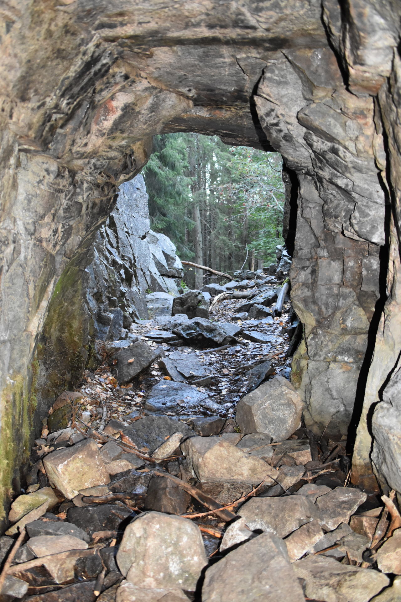
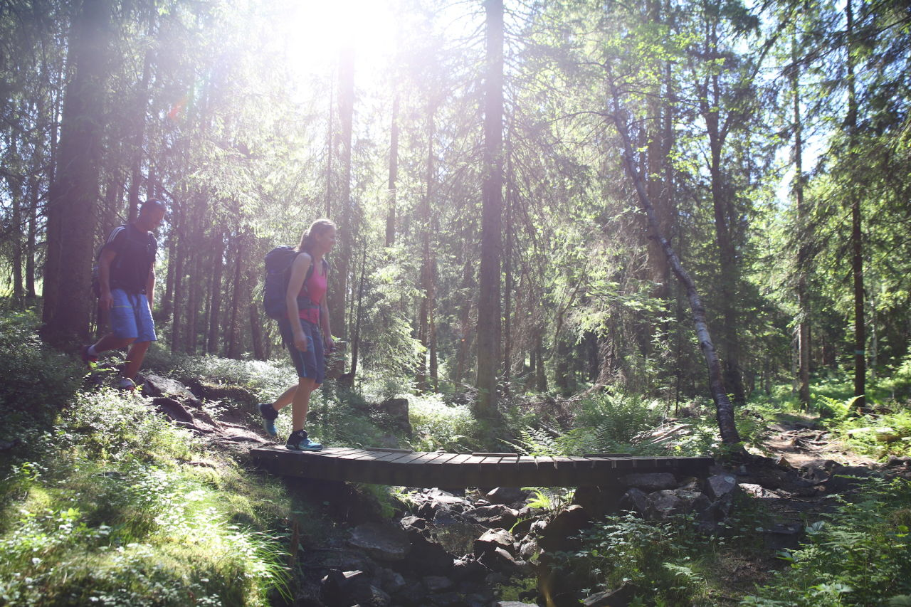
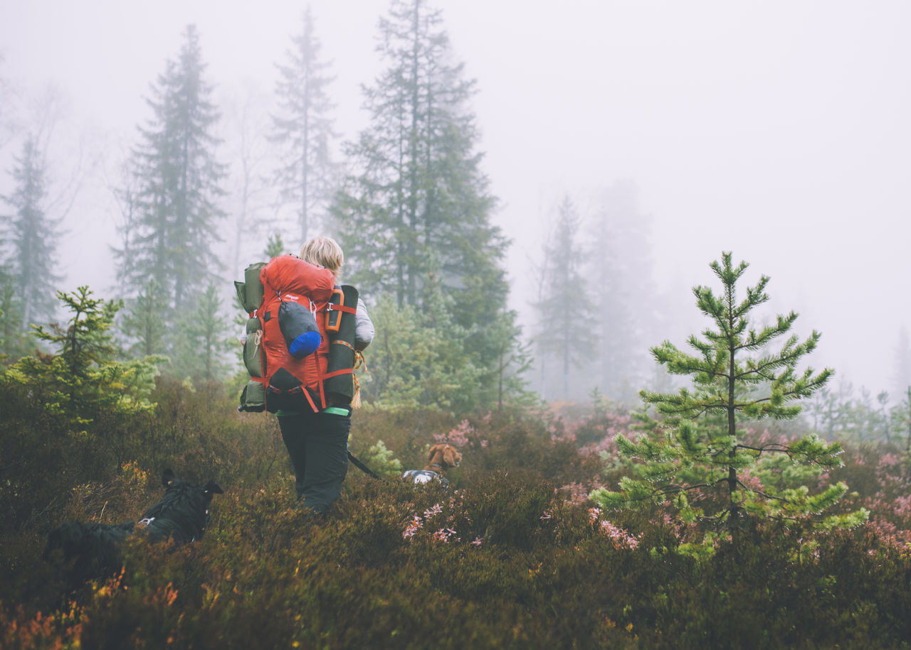
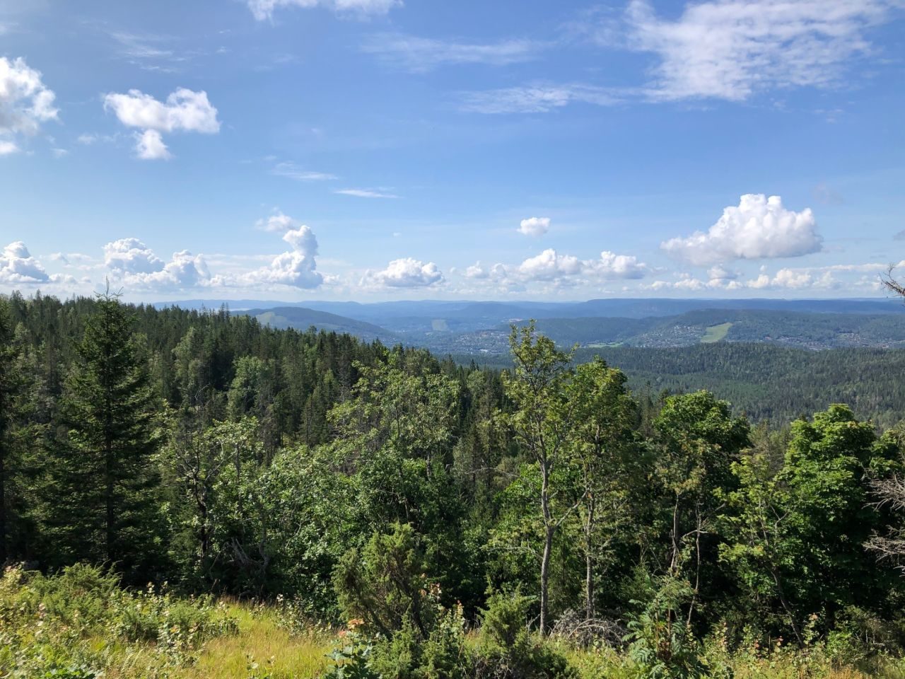
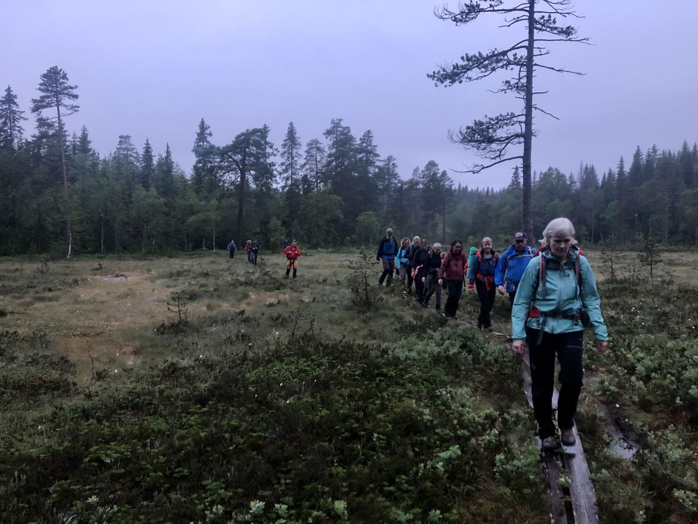
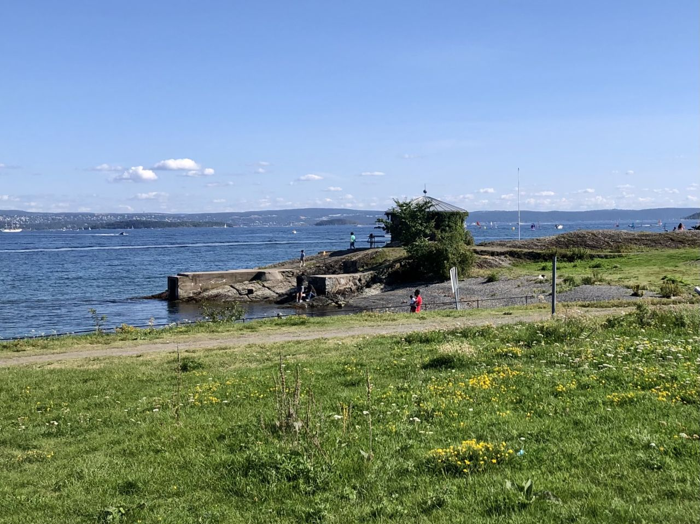

Steder å gå!
I Oslo
Reise i Oslo
I skogene rundt Oslo er det 2700 km blåmerkede stier. Enten du vil gå en barnevennlig tur, topptur, langtur eller kanskje gå fra hytte til hytte, har du mange alternativer. Vi har samlet en rekke turforslag fordelt på de ulike områdene i Oslomarka. I skogene rundt Oslo er det 2700 km blåmerkede stier. Enten du vil gå en barnevennlig tur, topptur, langtur eller kanskje gå fra hytte til hytte, har du mange alternativer. Vi har samlet en rekke turforslag fordelt på de ulike områdene i Oslomarka. I skogene rundt Oslo er det 2700 km blåmerkede stier. Enten du vil gå en barnevennlig tur, topptur, langtur eller kanskje gå fra hytte til hytte, har du mange alternativer. Vi har samlet en rekke turforslag fordelt på de ulike områdene i Oslomarka. I skogene rundt Oslo er det 2700 km blåmerkede stier. Enten du vil gå en barnevennlig tur, topptur, langtur eller kanskje gå fra hytte til hytte, har du mange alternativer. Vi har samlet en rekke turforslag fordelt på de ulike områdene i Oslomarka. I skogene rundt Oslo er det 2700 km blåmerkede stier. Enten du vil gå en barnevennlig tur, topptur, langtur eller kanskje gå fra hytte til hytte, har du mange alternativer. Vi har samlet en rekke turforslag fordelt på de ulike områdene i Oslomarka. I skogene rundt Oslo er det 2700 km blåmerkede stier. Enten du vil gå en barnevennlig tur, topptur, langtur eller kanskje gå fra hytte til hytte, har du mange alternativer. Vi har samlet en rekke turforslag fordelt på de ulike områdene i Oslomarka. I skogene rundt Oslo er det 2700 km blåmerkede stier. Enten du vil gå en barnevennlig tur, topptur, langtur eller kanskje gå fra hytte til hytte, har du mange alternativer. Vi har samlet en rekke turforslag fordelt på de ulike områdene i Oslomarka. I skogene rundt Oslo er det 2700 km blåmerkede stier. Enten du vil gå en barnevennlig tur, topptur, langtur eller kanskje gå fra hytte til hytte, har du mange alternativer. Vi har samlet en rekke turforslag fordelt på de ulike områdene i Oslomarka.
Vakre turer
-

Lett tur til Gaustad gruve
Gaustad gruve ligger i skogen bare noen få hundre meter fra utfartsparkeringen ved Sognsvann i Oslo. Sammen med Sogn gruve på andre siden av Sognsvann, har den en historie som går mange hundre år tilbake i tid. De to gruvene kalles gjerne for Sognsvannsgruvene, og gruvedriften startet opp så tidlig som 1538-39. De er altså to av de eldste gruvene i Oslomarka. Driften foregikk i to omganger. Først fra 1538-39 til 1584 og deretter fra 1792 til 1854.
-

Rundtur over Merraskallen fra Årnes i Sørkedalen
Denne turen tar deg til den flott og fine toppen med den vakre navnet Merraskallen. Turen er litt krevende på ca. 14 km hvor du følger DNT’s blåmerker fra start til mål. Denne turen tar deg til den flott og fine toppen med den vakre navnet Merraskallen. Turen er litt krevende på ca. 14 km hvor du følger DNT’s blåmerker fra start til mål.
-

Rundtur rundt Helgeren fra Skar
Vi starter på Skar, og tar inn ved skiltposten ved nedre P-plass. Straks etter er vi på veien mot Nordbråten, dreier venstre, og etter 300 meter er vi ved skiltposten i veikrysset nedenfor Nordbråtan. Herfra følges bomveien til venstre opp til Øyungsdammen, og vi vandrer videre på blåmerket sti langs østsiden av Øyungen (mange fine badeplasser!) opp til Liggeren. På skiltposten ovenfor tunet er det skiltet mot Lille Gørja, straks etter krysser vi Tømteveien og begynner på den bratte stigningen mot Gørjehøgda (490 moh). Klyvingen gir valuta: Fin utsikt sør- og vestover underveis.
-

Topptur til Tjæregrashøgda via Merreskallen fra Skansebakken
Tjæregrashøgda ligger to, tre kilometer sydvest for Triungsvanna naturreservat. Det er mange stier opp, fra Bærum, Lommedalen og Sørkedalen. Dette er nok en av favorittplassene for bæringer. Det er stedvis noe stignig, men du går i noen av Bærumsmarkas fineste perler. På toppen er himmelen høy og hvis sol ser du den blinke i Oslofjorden. En solfylt kveldstime gir utsikten et drømmesyn over Tanumåsen, Skaugumåsen og Vestmarka.
-

Langs kommunegrensen fra Lommedalen til Fossum
Dette er en av etappene som følger Bærums kommunegrense nord i marka. Du er innom Hole-, Ringerike- og Oslo kommune. Du starter ved By i Lommedalen og går til Byvann og videre innover Krokskogen over Vidvangshøgda som er Bærums høyeste punkt. Videre til Hvitsteinsvann, Triungsvann og forbi Østernvann til klubbhuset ved Fossum der etappen avsluttes.
-

På sykkel fra Lysaker rundt Fornebu til Slependen
Turen følger stier, sykkelveier og småveger fra Sollerudstranda ved Lysaker via en stor runde på Fornebu videre til Strand, Høvik, Sandvika og ender på Slependen. Beskrivelsen er laget for sykkeltur på rundt 19 km men kan også følges til fots. Følg da kyststien langs sjøen fra Holtekilen til Sandvika. Beregn en fottur på ca 5 timer.
Reise i Oslo
I skogene rundt Oslo er det 2700 km blåmerkede stier. Enten du vil gå en barnevennlig tur, topptur, langtur eller kanskje gå fra hytte til hytte, har du mange alternativer. Vi har samlet en rekke turforslag fordelt på de ulike områdene i Oslomarka. I skogene rundt Oslo er det 2700 km blåmerkede stier. Enten du vil gå en barnevennlig tur, topptur, langtur eller kanskje gå fra hytte til hytte, har du mange alternativer. Vi har samlet en rekke turforslag fordelt på de ulike områdene i Oslomarka. I skogene rundt Oslo er det 2700 km blåmerkede stier. Enten du vil gå en barnevennlig tur, topptur, langtur eller kanskje gå fra hytte til hytte, har du mange alternativer. Vi har samlet en rekke turforslag fordelt på de ulike områdene i Oslomarka. I skogene rundt Oslo er det 2700 km blåmerkede stier. Enten du vil gå en barnevennlig tur, topptur, langtur eller kanskje gå fra hytte til hytte, har du mange alternativer. Vi har samlet en rekke turforslag fordelt på de ulike områdene i Oslomarka. I skogene rundt Oslo er det 2700 km blåmerkede stier. Enten du vil gå en barnevennlig tur, topptur, langtur eller kanskje gå fra hytte til hytte, har du mange alternativer. Vi har samlet en rekke turforslag fordelt på de ulike områdene i Oslomarka. I skogene rundt Oslo er det 2700 km blåmerkede stier. Enten du vil gå en barnevennlig tur, topptur, langtur eller kanskje gå fra hytte til hytte, har du mange alternativer. Vi har samlet en rekke turforslag fordelt på de ulike områdene i Oslomarka. I skogene rundt Oslo er det 2700 km blåmerkede stier. Enten du vil gå en barnevennlig tur, topptur, langtur eller kanskje gå fra hytte til hytte, har du mange alternativer. Vi har samlet en rekke turforslag fordelt på de ulike områdene i Oslomarka. I skogene rundt Oslo er det 2700 km blåmerkede stier. Enten du vil gå en barnevennlig tur, topptur, langtur eller kanskje gå fra hytte til hytte, har du mange alternativer. Vi har samlet en rekke turforslag fordelt på de ulike områdene i Oslomarka.